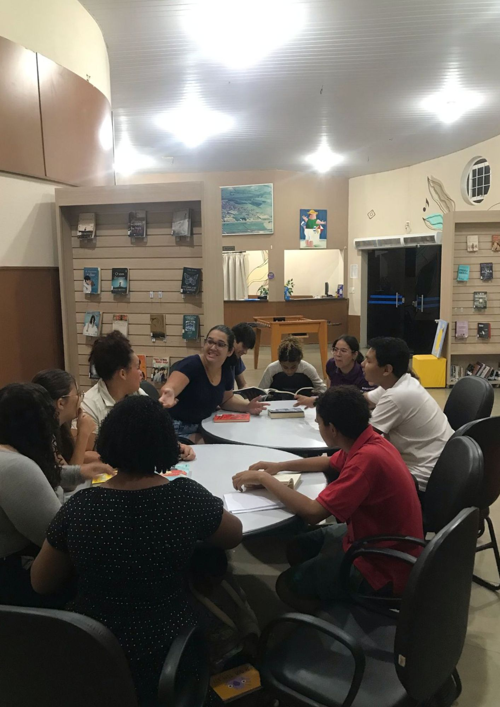

Atividades Extracurriculares
Clube do Livro

Bate-Papo com escritores Viagem Literária.
Participei de encontros com autores, discutindo literatura, processo criativo e leitura crítica. A atividade incentivou o hábito da leitura e aproximou os participantes do universo literário, promovendo troca de ideias e experiências.
Clube de Estudos
Debate crítico.
Integrei grupo de estudos com foco em temas acadêmicos e culturais. Contribuí com leitura de textos, elaboração de resumos e debates em grupo. A participação reforçou o senso de colaboração, organização e interesse pelo conhecimento.
Bolsista em Aluno Monitor

Bolsista em Aluno Monitor do BEEM, no componente de Língua Portuguesa.
Atuei como monitor(a), auxiliando colegas com dúvidas e reforçando conteúdos de Língua Portuguesa. Também organizei materiais e acompanhei o desempenho da turma. Desenvolvi senso de liderança, domínio do conteúdo e responsabilidade acadêmica.
Teatro

Apresentação teatral "Flagrante Delírio".
Participei como atriz em apresentação teatral, com ensaios, construção de personagens e apresentação ao público. A experiência ampliou minha expressão artística e criatividade, além de promover o trabalho coletivo.